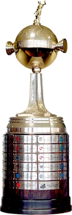
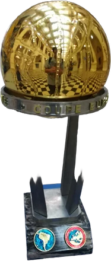

No hay ninguna edición con ese año.
Elegí una edición.
Desde 1960

Copa Libertadores Copa Sudamericana
Copa Intercontinental Mundial de ClubesLa Gloria Eterna
Todas las ediciones, partidos, goleadores y planteles
No hay ninguna edición con ese año.
Elegí una edición.